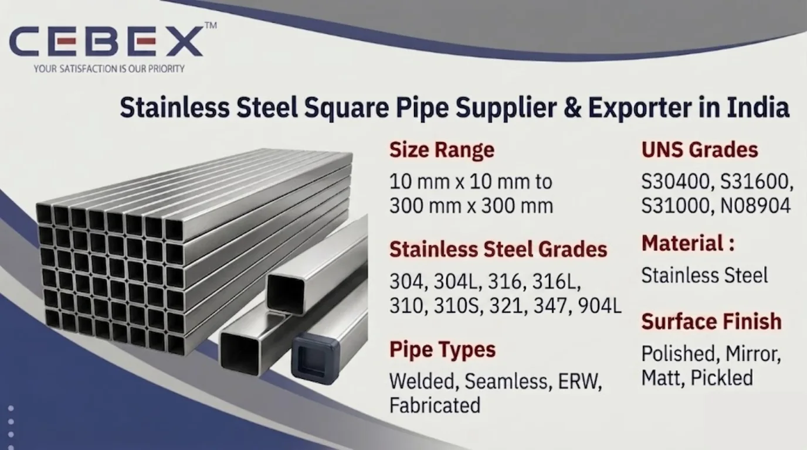

Leading Supplier & Exporter of Stainless Steel Square Pipes
Stainless Steel Square Pipe is widely used in structural fabrication, industrial engineering, construction industries, architectural applications, marine engineering, food processing industries, pharmaceutical plants, and industrial infrastructure projects because of its excellent corrosion resistance, superior mechanical strength, dimensional stability, and modern structural appearance. As a leading Stainless Steel Square Pipe Supplier & Exporter in India, CEBEX STEEL INDIA supplies premium-quality stainless steel square pipes manufactured according to international ASTM, ASME, DIN, EN, and ISO standards for demanding industrial and structural applications.
As experienced traders and suppliers of Stainless Steel Square Pipe in India, we provide high-quality square hollow sections suitable for structural frameworks, fabrication projects, railings, architectural systems, industrial machinery, support structures, furniture manufacturing, and mechanical engineering applications. Our stainless steel square pipes are extensively utilized in petrochemical plants, offshore engineering, food processing systems, pharmaceutical facilities, construction projects, transportation systems, and industrial fabrication applications where corrosion resistance and structural reliability are essential.
We supply Stainless Steel Square Pipes in multiple grades, wall thicknesses, dimensions, finishes, and specifications suitable for industrial processing and export applications. Our product range includes welded square pipes, seamless square pipes, polished square pipes, mirror finish square pipes, industrial square tubes, decorative square pipes, and customized stainless steel square hollow sections according to customer drawings and project requirements.
At CEBEX STEEL INDIA, we utilize advanced tube forming, welding, annealing, straightening, polishing, and precision finishing technologies to supply Stainless Steel Square Pipes with excellent dimensional accuracy, smooth surface finish, and dependable mechanical performance. Our products are trusted by EPC contractors, fabrication industries, infrastructure developers, engineering companies, construction contractors, and industrial buyers across India, Africa, the Middle East, Europe, and Southeast Asia.

Selecting the right Stainless Steel Square Pipe supplier is essential for ensuring structural strength, dimensional precision, corrosion resistance, weldability, and long-term operational reliability. CEBEX STEEL INDIA has established itself as a trusted Stainless Steel Square Pipe Supplier & Exporter in India through strong technical expertise, strict quality control systems, and dependable worldwide export capabilities.
We maintain complete traceability from raw material procurement to finished pipe dispatch and provide all materials with EN 10204 3.1/3.2 Mill Test Certificates, inspection reports, and export documentation. Our in-house quality department performs comprehensive inspection procedures including chemical analysis, dimensional inspection, flattening tests, tensile testing, hardness testing, hydrostatic testing, and surface quality verification to ensure compliance with ASTM and customer project specifications.
Our export logistics team efficiently manages seaworthy packaging, documentation, and international shipping for smooth global deliveries.
Our Stainless Steel Square Pipes are manufactured using premium-quality stainless steel raw materials sourced from approved mills and processed through advanced forming technologies to ensure superior corrosion resistance, dimensional consistency, and mechanical durability.
| Feature | Specification / Detail |
|---|---|
| Standards | ASTM, ASME, DIN, EN, ISO |
| ASTM Specifications | ASTM A554, ASTM A312, ASTM A269 |
| Stainless Steel Grades | 304, 304L, 316, 316L, 310, 310S, 321, 347, 904L |
| UNS Grades | S30400, S30403, S31600, S31603, S31000, S32100, S34700, N08904 |
| Size Range | 10 mm x 10 mm to 300 mm x 300 mm |
| Wall Thickness | 0.5 mm to 12 mm |
| Length Range | Up to 12 Meter |
| Pipe Types | Welded, Seamless, ERW, Fabricated |
| Surface Finish | Polished, Mirror Finish, Matt Finish, Pickled |
| Manufacturing Process | Cold Rolled, Hot Rolled, Welded |
| Documentation | EN 10204 3.1/3.2, MTC, Inspection Reports |
We supply a comprehensive range of Stainless Steel Square Pipes suitable for industrial, architectural, structural, and fabrication applications. Our product range includes welded stainless steel square pipes for structural fabrication, seamless square pipes for pressure and industrial systems, polished square pipes for decorative applications, and heavy wall square hollow sections for engineering projects.
We also supply mirror polished square pipes, industrial square tubes, structural square hollow sections, brushed finish square pipes, ornamental square pipes, and customized fabricated square pipe sections according to customer specifications and project requirements.
Material selection plays a critical role in determining corrosion resistance, structural strength, weldability, and high-temperature performance. We supply Stainless Steel Square Pipes in internationally approved grades suitable for highly demanding industrial operating environments.
| Stainless Steel Grade | UNS Number | Typical Applications | Standards |
|---|---|---|---|
| SS 304 | S30400 | Structural & General Industrial Applications | ASTM A554 |
| SS 304L | S30403 | Welding & Chemical Processing | ASTM A554 |
| SS 316 | S31600 | Marine & Offshore Applications | ASTM A554 |
| SS 316L | S31603 | Pharmaceutical & Chemical Industries | ASTM A554 |
| SS 310 / 310S | S31000 / S31008 | High Temperature Applications | ASTM A554 |
| SS 321 | S32100 | Heat Exchangers & Thermal Systems | ASTM A554 |
| SS 347 | S34700 | Pressure Equipment Applications | ASTM A554 |
| SS 904L | N08904 | Highly Corrosive Environments | ASTM A554 |
All materials are sourced from reputed mills and supplied with complete traceability, inspection reports, and EN 10204 3.1/3.2 Mill Test Certificates.
Every Stainless Steel Square Pipe supplied by CEBEX STEEL INDIA includes complete chemical composition and mechanical property reports to ensure compliance with international standards and industrial project requirements.
| Element | Composition (%) |
|---|---|
| Chromium (Cr) | 18.0 – 20.0 |
| Nickel (Ni) | 8.0 – 10.5 |
| Carbon (C) | 0.08 Max |
| Manganese (Mn) | 2.0 Max |
| Silicon (Si) | 1.0 Max |
| Iron (Fe) | Balance |
| Property | Value |
|---|---|
| Tensile Strength | 515 MPa Min |
| Yield Strength | 205 MPa Min |
| Elongation | 40% Min |
| Hardness | 92 HRB Max |
| Element | Composition (%) |
|---|---|
| Chromium (Cr) | 16.0 – 18.0 |
| Nickel (Ni) | 10.0 – 14.0 |
| Molybdenum (Mo) | 2.0 – 3.0 |
| Carbon (C) | 0.08 Max |
| Iron (Fe) | Balance |
| Property | Value |
|---|---|
| Tensile Strength | 515 MPa Min |
| Yield Strength | 205 MPa Min |
| Elongation | 40% Min |
| Hardness | 95 HRB Max |
Our quality department conducts spectrographic analysis, tensile testing, hardness testing, hydrostatic testing, dimensional verification, and surface inspection using calibrated inspection equipment.
We supply Stainless Steel Square Pipes in various dimensions and thicknesses according to industrial fabrication and structural engineering requirements.
| Square Pipe Size | Thickness Range |
|---|---|
| 10 x 10 mm | 0.5 – 2 mm |
| 25 x 25 mm | 1 – 4 mm |
| 50 x 50 mm | 1.5 – 6 mm |
| 100 x 100 mm | 2 – 8 mm |
| 200 x 200 mm | 4 – 12 mm |
Custom cut lengths, polishing, laser cutting, bending, and fabrication services are available according to customer drawings and industrial project specifications.
Stainless Steel Square Pipes provide excellent resistance to atmospheric corrosion, chemicals, moisture exposure, seawater conditions, and industrial operating environments. Austenitic stainless steel grades such as SS 304 and SS 316 offer outstanding corrosion resistance and structural reliability for demanding industrial applications.
SS 316 and SS 316L stainless steel square pipes provide improved chloride corrosion resistance due to molybdenum content, making them suitable for marine engineering, offshore structures, desalination plants, and chemical processing systems. High-temperature grades such as SS 310 and SS 321 maintain excellent oxidation resistance and mechanical stability in elevated temperature environments.
Our Stainless Steel Square Pipes are extensively used in industries requiring structural strength, corrosion resistance, dimensional precision, and modern architectural appearance. Construction industries utilize stainless steel square pipes for structural frameworks, handrails, support systems, facades, and architectural fabrication projects.
Industrial fabrication industries use stainless steel square hollow sections for machinery manufacturing, conveyors, platforms, support structures, process systems, and engineering assemblies. Stainless steel square pipes are also widely used in marine engineering, food processing plants, pharmaceutical industries, petrochemical facilities, transportation systems, infrastructure projects, and industrial automation systems.
Quality assurance is one of the core strengths of our manufacturing and export operations. Every Stainless Steel Square Pipe undergoes strict inspection and testing procedures including dimensional inspection, chemical analysis, hardness testing, tensile testing, hydrostatic testing, flattening tests, eddy current testing, and visual surface inspection.
Our quality control department utilizes advanced inspection equipment including spectrometers, hardness testing machines, ultrasonic testing systems, hydrostatic testing equipment, and dimensional measurement systems to ensure compliance with ASTM, ASME, DIN, EN, ISO, and customer project requirements.
We understand the importance of secure packaging and timely delivery for industrial and export projects. Our Stainless Steel Square Pipes are packed using export-grade wooden boxes, HDPE wrapping, plastic caps, waterproof materials, and seaworthy packaging systems to ensure complete protection during transportation and storage.
Our export logistics department manages complete shipping documentation including commercial invoices, packing lists, certificates of origin, mill test certificates, and inspection reports for smooth customs clearance and worldwide shipping.
As a leading Stainless Steel Square Pipe Supplier & Exporter in India, we have built a strong reputation for supplying high-quality Stainless Steel Square Pipes to major industrial and infrastructure projects across Africa. Our export team understands the unique requirements of African industries and ensures smooth, timely deliveries with complete documentation, inspection compliance, and international export support. From industrial fabrication and infrastructure development to marine engineering, petrochemical plants, and construction projects, our Stainless Steel Square Pipes are trusted by clients in Nigeria, Egypt, Kenya, South Africa, Ethiopia, and beyond.
In addition to Stainless Steel Square Pipe, we also manufacture and export Stainless Steel Pipes, Duplex Stainless Steel Pipes, Super Duplex Pipes, Inconel Pipes, and Monel Pipes. These high-performance alloy pipes are designed for critical applications requiring superior corrosion resistance, high strength, and excellent temperature stability in demanding industrial environments.
Our technical team is ready to assist you in selecting the ideal pipe grade, size, wall thickness, and specification for your industrial applications. Browse our full range:
Our clients choose CEBEX STEEL INDIA for our technical expertise, commitment to quality, and responsive service. We offer direct-from-manufacturer pricing, flexible order quantities, and comprehensive after-sales support. Our engineering team is available to assist with material selection, specification review, and custom design, ensuring that you receive the optimal solution for your application.
We supply Stainless Steel Square Pipes in SS 304, 304L, 316, 316L, 310, 321, 347, and 904L grades according to ASTM standards.
Welded square pipes are manufactured through forming and welding processes and are commonly used for structural applications, while seamless square pipes offer higher pressure resistance and are suitable for critical industrial systems.
Yes, SS 316 and SS 316L stainless steel square pipes are highly suitable for marine and offshore applications because of their superior chloride corrosion resistance.
Yes, all Stainless Steel Square Pipes are supplied with EN 10204 3.1/3.2 Mill Test Certificates, inspection reports, and complete traceability documentation.
Yes, we supply customized square pipe sizes, wall thicknesses, surface finishes, cut lengths, and fabrication services according to customer specifications and industrial project requirements.